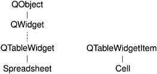
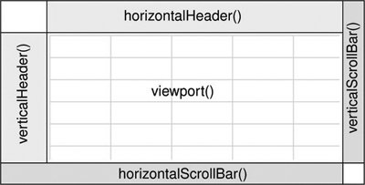

Subclassing QTableWidgetThe Spreadsheet class inherits from QTableWidget. A QTableWidget is effectively a grid that represents a two-dimensional sparse array. It displays whichever cells the user scrolls to, within its specified dimensions. When the user enters some text into an empty cell, QTableWidget automatically creates a QTableWidgetItem to store the text. Let's start implementing Spreadsheet, beginning with the header file: #ifndef SPREADSHEET_H #define SPREADSHEET_H #include <QTableWidget> class Cell; class SpreadsheetCompare; The header starts with forward declarations for the Cell and SpreadsheetCom-pare classes. Figure 4.1. Inheritance trees for Spreadsheet and Cell The attributes of a QTableWidget cell, such as its text and its alignment, are stored in a QTableWidgetItem. Unlike QTableWidget, QTableWidgetItem isn't a widget class; it is a pure data class. The Cell class inherits QTableWidgetItem and is explained when its implementation is shown in this chapter's last section.
class Spreadsheet : public QTableWidget
{
Q_OBJECT
public:
Spreadsheet(QWidget *parent = 0);
bool autoRecalculate() const { return autoRecalc; }
QString currentLocation() const;
QString currentFormula() const;
QTableWidgetSelectionRange selectedRange() const;
void clear();
bool readFile(const QString &fileName);
bool writeFile(const QString &fileName);
void sort(const SpreadsheetCompare &compare);
The autoRecalculate() function is implemented inline since it just returns whether or not auto-recalculation is in force. In Chapter 3, we relied on some public functions in Spreadsheet when we implemented MainWindow. For example, we called clear() from MainWindow::newFile() to reset the spreadsheet. We also used some functions inherited from QTableWidget, notably setCurrentCell() and setShowGrid().
public slots:
void cut();
void copy();
void paste();
void del();
void selectCurrentRow();
void selectCurrentColumn();
void recalculate();
void setAutoRecalculate(bool recalc);
void findNext(const QString &str, Qt::CaseSensitivity cs);
void findPrevious(const QString &str, Qt::CaseSensitivity cs);
signals:
void modified();
Spreadsheet provides many slots that implement actions from the Edit, Tools, and Options menus, and it provides one signal, modified(), to announce any change that has occurred.
private slots:
void somethingChanged();
We define one private slot used internally by the Spreadsheet class.
private:
enum { MagicNumber = 0x7F51C883, RowCount = 999, ColumnCount = 26 };
Cell *cell(int row, int column) const;
QString text(int row, int column) const;
QString formula(int row, int column) const;
void setFormula(int row, int column, const QString &formula);
bool autoRecalc;
};
In the class's private section, we declare three constants, four functions, and one variable.
class SpreadsheetCompare
{
public:
bool operator()(const QStringList &row1,
const QStringList &row2) const;
enum { KeyCount = 3 };
int keys[KeyCount];
bool ascending[KeyCount];
};
#endif
The header file ends with the SpreadsheetCompare class definition. We will explain this when we review Spreadsheet::sort(). We will now look at the implementation:
#include <QtGui>
#include "cell.h"
#include "spreadsheet.h"
Spreadsheet::Spreadsheet(QWidget *parent)
: QTableWidget(parent)
{
autoRecalc = true;
setItemPrototype(new Cell);
setSelectionMode(ContiguousSelection);
connect(this, SIGNAL(itemChanged(QTableWidgetItem *)),
this, SLOT(somethingChanged()));
clear();
}
Normally, when the user enters some text on an empty cell, the QTableWidget will automatically create a QTableWidgetItem to hold the text. In our spreadsheet, we want Cell items to be created instead. This is achieved by the setItemPrototype() call in the constructor. Internally, QTableWidget clones the item passed as a prototype every time a new item is required. Also in the constructor, we set the selection mode to QAbstractItemView::ContiguousSelection to allow a single rectangular selection. We connect the table widget's itemChanged() signal to the private somethingChanged() slot; this ensures that when the user edits a cell, the somethingChanged() slot is called. Finally, we call clear() to resize the table and to set the column headings.
void Spreadsheet::clear()
{
setRowCount(0);
setColumnCount(0);
setRowCount(RowCount);
setColumnCount(ColumnCount);
for (int i = 0; i < ColumnCount; ++i) {
QTableWidgetItem *item = new QTableWidgetItem;
item->setText(QString(QChar('A' + i)));
setHorizontalHeaderItem(i, item);
}
setCurrentCell(0, 0);
}
The clear() function is called from the Spreadsheet constructor to initialize the spreadsheet. It is also called from MainWindow::newFile(). We could have used QTableWidget::clear() to clear all the items and any selections, but that would have left the headers at their current size. Instead, we resize the table down to 0 x 0. This clears the entire spreadsheet, including the headers. We then resize the table to ColumnCount x RowCount (26 x 999) and populate the horizontal header with QTableWidgetItems containing the column names "A", "B", …, "Z". We don't need to set the vertical header labels, because these default to "1", "2", …, "999". At the end, we move the cell cursor to cell A1. A QTableWidget is composed of several child widgets. It has a horizontal QHeaderView at the top, a vertical QHeaderView on the left, and two QScrollBars. The area in the middle is occupied by a special widget called the viewport, on which QTableWidget draws the cells. The different child widgets are accessible through functions inherited from QTableView and QAbstractScrollArea (see Figure 4.2). QAbstractScrollArea provides a scrollable viewport and two scroll bars, which can be turned on and off. Its QScrollArea subclass is covered in Chapter 6. Figure 4.2. QTableWidget's constituent widgets
Cell *Spreadsheet::cell(int row, int column) const
{
return static_cast<Cell *>(item(row, column));
}
The cell() private function returns the Cell object for a given row and column. It is almost the same as QTableWidget::item(), except that it returns a Cell pointer instead of a QTableWidgetItem pointer.
QString Spreadsheet::text(int row, int column) const
{
Cell *c = cell(row, column);
if (c) {
return c->text();
} else {
return "";
}
}
The text() private function returns the text for a given cell. If cell() returns a null pointer, the cell is empty, so we return an empty string.
QString Spreadsheet::formula(int row, int column) const
{
Cell *c = cell(row, column);
if (c) {
return c->formula();
} else {
return "";
}
}
The formula() function returns the cell's formula. In many cases, the formula and the text are the same; for example, the formula "Hello" evaluates to the string "Hello", so if the user types "Hello" into a cell and presses Enter, that cell will show the text "Hello". But there are a few exceptions:
The task of converting a formula into a value is performed by the Cell class. For the moment, the thing to bear in mind is that the text shown in the cell is the result of evaluating the formula, not the formula itself.
void Spreadsheet::setFormula(int row, int column,
const QString &formula)
{
Cell *c = cell(row, column);
if (!c) {
c = new Cell;
setItem(row, column, c);
}
c->setFormula(formula);
}
The setFormula() private function sets the formula for a given cell. If the cell already has a Cell object, we reuse it. Otherwise, we create a new Cell object and call QTableWidget::setItem() to insert it into the table. At the end, we call the cell's own setFormula() function, which will cause the cell to be repainted if it's shown on screen. We don't need to worry about deleting the Cell object later on; QTableWidget takes ownership of the cell and will delete it automatically at the right time.
QString Spreadsheet::currentLocation() const
{
return QChar('A' + currentColumn())
+ QString::number(currentRow() + 1);
}
The currentLocation() function returns the current cell's location in the usual spreadsheet format of column letter followed by row number. MainWindow::updateStatusBar() uses it to show the location in the status bar.
QString Spreadsheet::currentFormula() const
{
return formula(currentRow(), currentColumn());
}
The currentFormula() function returns the current cell's formula. It is called from MainWindow::updateStatusBar().
void Spreadsheet::somethingChanged()
{
if (autoRecalc)
recalculate();
emit modified();
}
The somethingChanged() private slot recalculates the whole spreadsheet if "auto-recalculate" is enabled. It also emits the modified() signal. |